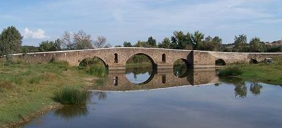
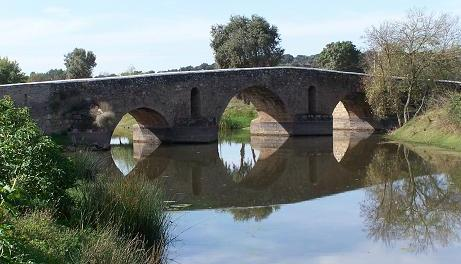

Puente de Monforte
En Monforte (Portugal) se localiza el puente romano datado en el siglo I y reconstruido posteriormente. Ubicado en lar vía romana entre Mérida y Lisboa. Puente de cinco arcos. En Monforte también se puede visitar la villa romana de Torre de Palma.
|
 |
 |
| HISPANIA | PUENTES ROMANOS | TOPÓNIMOS |